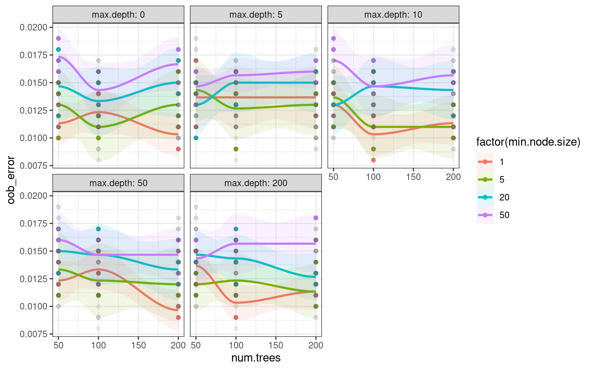
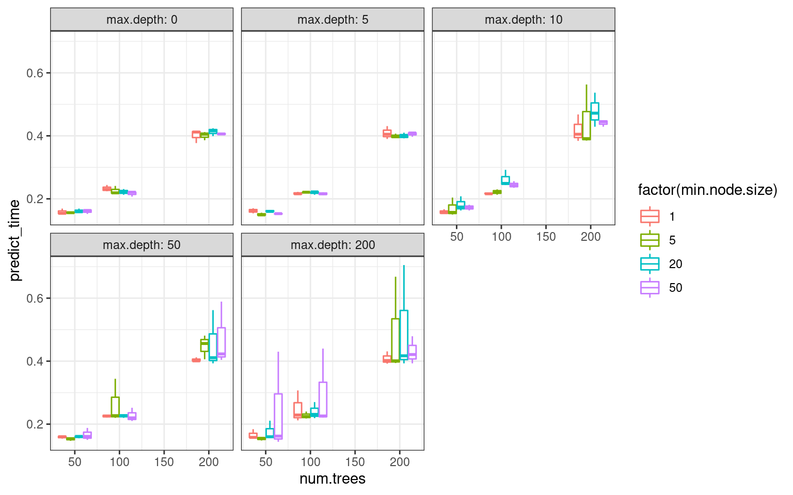
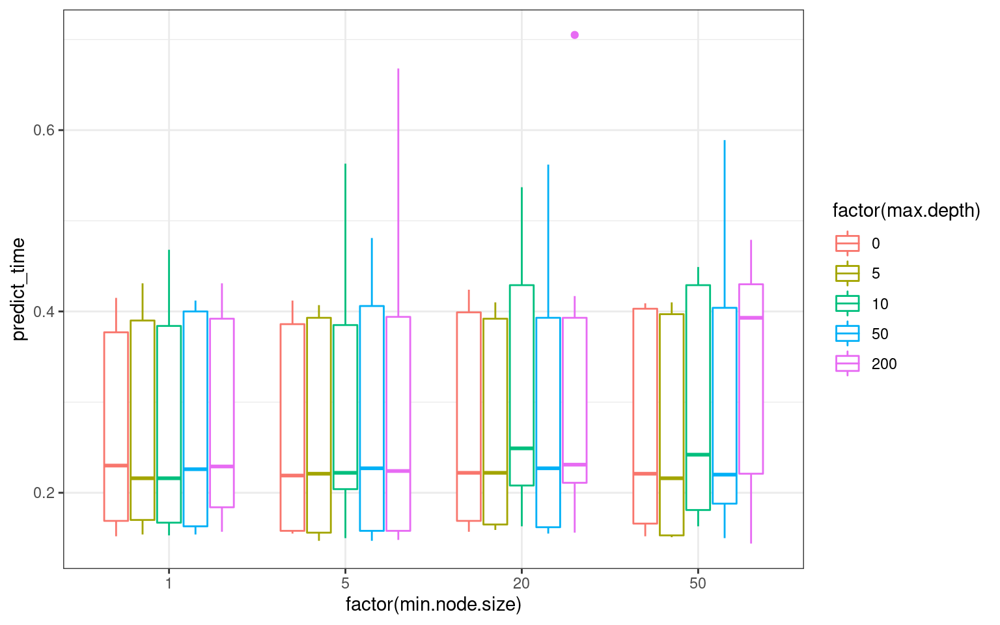
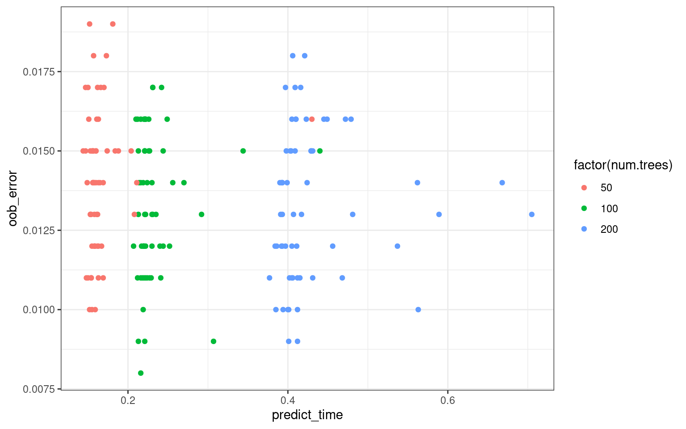
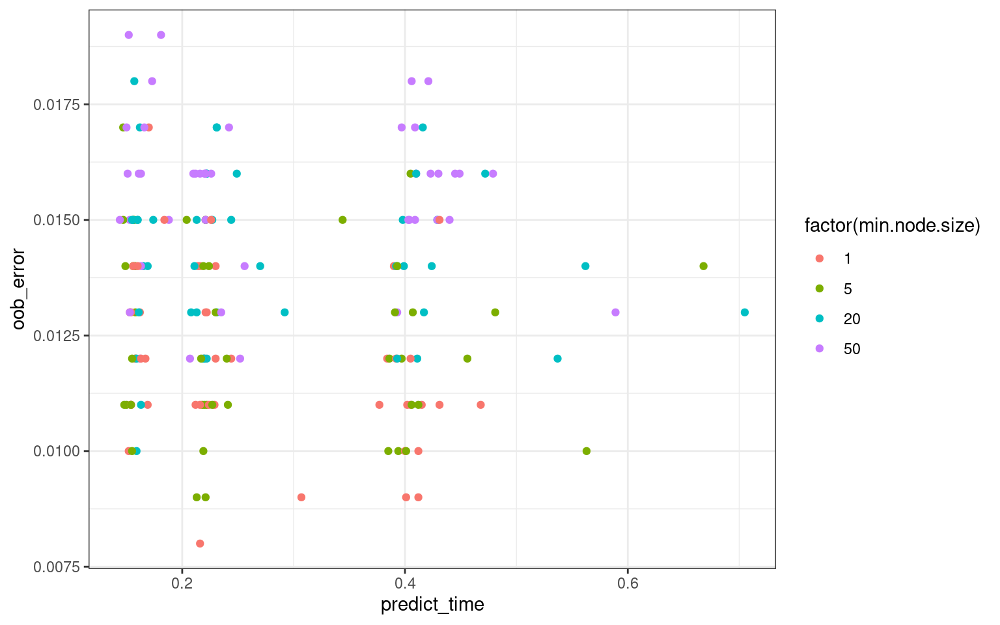
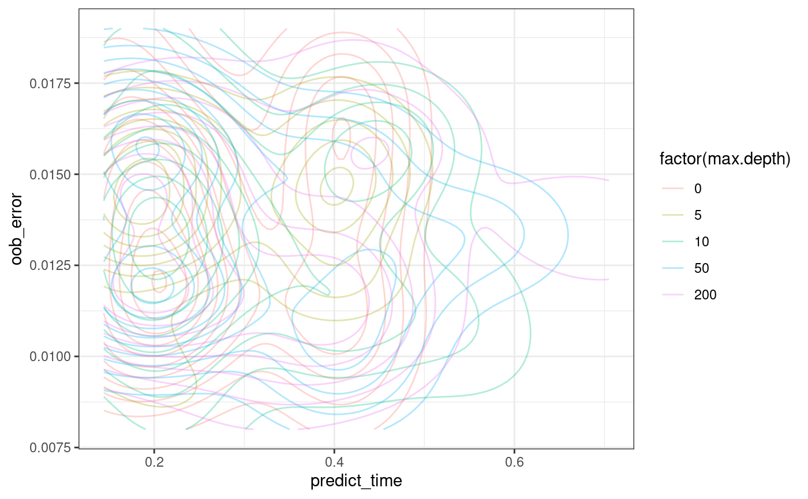

classification_performance.RmdSince we are training a classifier and the giving it images to work on, the way that we train the classifier has impact on how good our results will be.
I will show several ways the classifier can be trained and how to check if the results are good.
params_df <- tibble::tibble(
file = c(
system.file(
"extdata", "tiny_4T1-shNT-1_layer1.png",
package = "clasifierrr"),
system.file(
"extdata", "tiny_4T1-shNT-1_layer2.png",
package = "clasifierrr")),
classif = c("spheroid", "bg"),
related_file = system.file(
"extdata", "tiny_4T1-shNT-1.png",
package = "clasifierrr")
)
params_df
#> # A tibble: 2 x 3
#> file classif related_file
#> <chr> <chr> <chr>
#> 1 /tmp/RtmpGL73Jd/temp_libpath5cdb… sphero… /tmp/RtmpGL73Jd/temp_libpath5cdbb1a…
#> 2 /tmp/RtmpGL73Jd/temp_libpath5cdb… bg /tmp/RtmpGL73Jd/temp_libpath5cdbb1a…Well … a semi-good measure of prediction accuracy is the out of bag prediction error (OOB for short) and it is posible to modulate several parameters that can impact that.
library(ranger)
train_params_grid <- as.data.frame(expand.grid(
num.trees = c(50, 100, 200),
min.node.size = c(1, 5, 20, 50),
max.depth = c(0, 5, 10, 50, 200)))
# Since we are good scientists we will run it in triplicate ...
train_params_grid <- rbind(train_params_grid,train_params_grid,train_params_grid)This makes a series of parameters that we will go though and give a model for each of their combinations
trainset <- build_train_multi(
params_df,
train_size_each = 5000,
filter_widths = c(3,5))
#> Returning for file: /tmp/RtmpGL73Jd/temp_libpath5cdbb1af11572/clasifierrr/extdata/tiny_4T1-shNT-1_layer1.png and classification" spheroid " a total of { 8556 } positive pixels
#> Returning for file: /tmp/RtmpGL73Jd/temp_libpath5cdbb1af11572/clasifierrr/extdata/tiny_4T1-shNT-1_layer2.png and classification" bg " a total of { 14056 } positive pixels
#> Classified objects are of classes {bg: 3163} and {spheroid: 1837}
#> Returning a data frame of 5000 rows and 9 columns
# This makes a smaller dataset for the purpose of this tutorial ...
small_trainset <- trainset[sample(1:nrow(trainset), 1000),]forests <- furrr::future_pmap(
train_params_grid,
function(num.trees, min.node.size, max.depth) {
ranger(
pixel_class ~ .,
data = small_trainset,
num.trees = num.trees,
importance = "impurity",
min.node.size = min.node.size,
max.depth = max.depth)},
.progress = interactive())
train_params_grid$oob_error <- purrr::map_dbl(forests, ~ .x$prediction.error) these are just the series of plots I would do to ceck which one works better…
require(ggplot2)
g <- ggplot(train_params_grid,
aes(y = oob_error, x = num.trees,
colour = factor(min.node.size),
fill = factor(min.node.size))) +
geom_point() +
geom_smooth(alpha = 0.1) +
facet_wrap(~ max.depth, labeller = label_both) +
geom_point(
data = train_params_grid[,-3],
alpha = 0.1, colour = "#666666",
aes(y = oob_error, x = num.trees),
inherit.aes = FALSE) +
theme_bw()
suppressWarnings(print(g))
Now lets take a look at the prediction times …
img <- readImageBw(params_df$related_file[[1]])
dims_use <- dim(img)
feats <- calc_features(img, filter_widths = c(3,5))
my_class_fun <- function(classifier) {
tt <- system.time({
suppressMessages({
class_img <- classify_img(
feature_frame = feats,
classifier = classifier,
dims = dims_use,
class_highlight = "bg")
})
})
return(list(class_img, tt))
}
class_results <- furrr::future_map(
forests,
my_class_fun,
.progress = interactive())train_params_grid$predict_time <- purrr::map_dbl(class_results, ~.x[[2]][[3]])
ggplot(train_params_grid,
aes(y = predict_time, x = num.trees,
colour = factor(min.node.size),
group = interaction(min.node.size, num.trees))) +
geom_boxplot() +
facet_wrap(~ max.depth, labeller = label_both) +
theme_bw()
ggplot(train_params_grid,
aes(y = predict_time, x = factor(min.node.size),
colour = factor(max.depth),
group = interaction(min.node.size, max.depth))) +
geom_boxplot() +
theme_bw()
We can notice that increasing min.node.size does not increase prediction times, whilst num.trees definitely does.
ggplot(train_params_grid,
aes(y = oob_error, x = predict_time, colour = factor(num.trees))) +
geom_point() +
theme_bw()
From this plot we can see that larger num.trees definitely make the prediction slower and not necessarily better. Nonetheless, it is more consistent across the other parameters
ggplot(train_params_grid,
aes(y = oob_error, x = predict_time, colour = factor(min.node.size))) +
geom_point() +
theme_bw()
And form this plot we can see that higher oob errors are seen with larger min.node.size and a value of 5 seems optimal.
ggplot(train_params_grid,
aes(y = oob_error, x = predict_time, colour = factor(max.depth))) +
geom_density2d(alpha = 0.3) +
theme_bw()
Wen can see that slower models dont necessarily makes predictions better!
caret is a package that helps you benchmark your classifiers, it implements a a lot of models to choose from, and we can select them to train our classifier.
This benchmarking is done by cross validation in several ways, please read their documentation for more details.
In this case, we will use it to train the default classifier used by our package. Which is a random forest as implemented by the rangerpackage
library(caret)
#> Loading required package: lattice
#>
#> Attaching package: 'caret'
#> The following object is masked from 'package:purrr':
#>
#> lift
ctrl <- trainControl(method = "repeatedcv", number = 2, repeats = 5)
model_ranger <- train(
pixel_class~.,
data = small_trainset,
method = "ranger",
trControl = ctrl)Once the model is trained, we can see how it performed by checking the output of thenameofyourmodel$results
model_ranger$results
#> mtry min.node.size splitrule Accuracy Kappa AccuracySD KappaSD
#> 1 2 1 gini 0.9684 0.9323568 0.005796551 0.01248297
#> 2 2 1 extratrees 0.9694 0.9343035 0.006866990 0.01488711
#> 3 5 1 gini 0.9668 0.9289772 0.006746192 0.01450656
#> 4 5 1 extratrees 0.9690 0.9335383 0.006944222 0.01490381
#> 5 8 1 gini 0.9624 0.9195827 0.006518350 0.01402942
#> 6 8 1 extratrees 0.9698 0.9353026 0.006425643 0.01387252Furthermore, we can compare across different machine learning algorithms !
suppressWarnings({
model_glm <- train(
pixel_class~.,
data = small_trainset,
method = "glm",
trControl = ctrl)
})
model_glm$results
#> parameter Accuracy Kappa AccuracySD KappaSD
#> 1 none 0.9544 0.9023177 0.006979335 0.01478324And by comparing the values of Kappa and Accuracy, we can decide which model works better for our data! Details on how to use the model later are found in our other vignette called alternative_classifiers